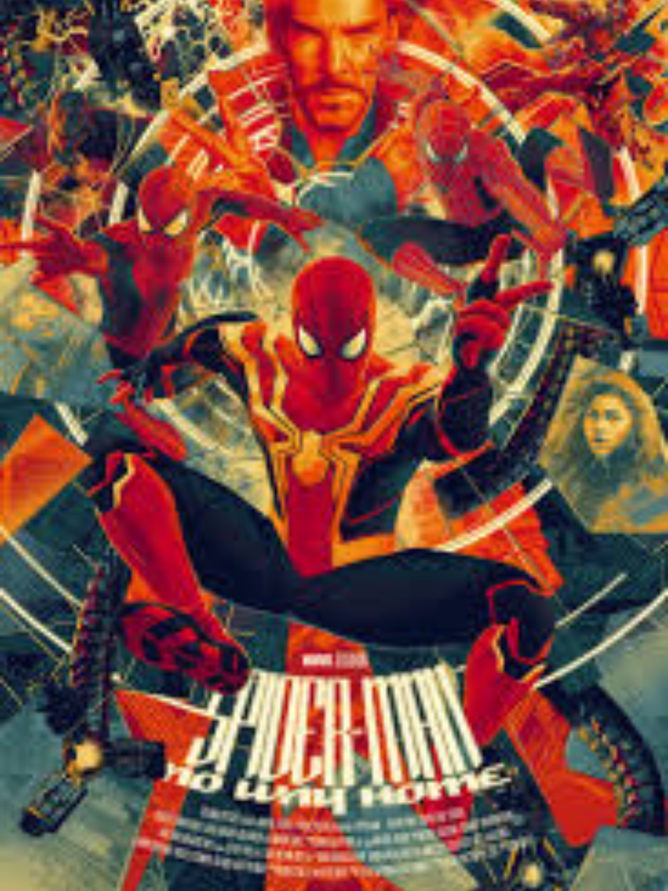
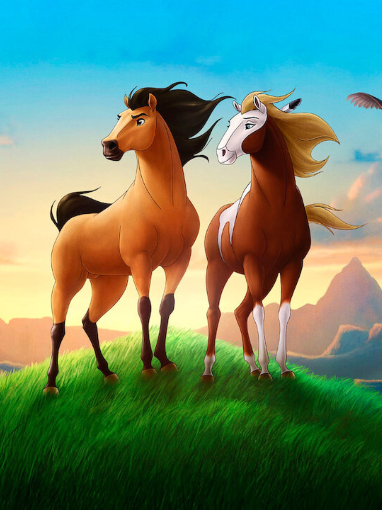
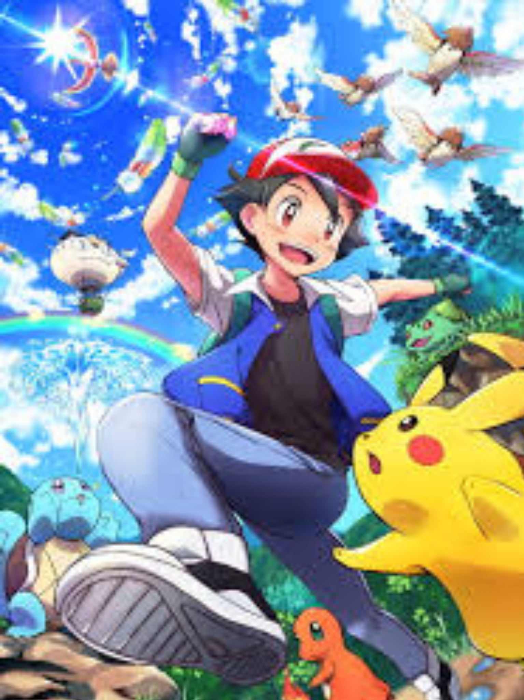

SPIDER-MAN NO WAY HOME
Tras descubrirse la identidad secreta de Peter Parker como Spider-Man, la vida del joven se vuelve una locura. Peter le pide ayuda al Doctor Strange para recuperar su vida, pero algo sale mal y provoca una fractura en el multiverso.
DEADPOOL
Un exmercenario quien, tras haber sido sometido a un cruel experimento, adquiere el superpoder de sanar rápidamente y pretende vengarse del hombre que destrozó su vida.
Kunfu Panda 3
En esta tercera aventura panda, Po deberá enfrentar dos desafíos épicos: uno, de origen sobrenatural, y el otro, muy cerca de su hogar, con la aparición de quien dice ser su padre biológico.
SPIRIT
Es un corcel mustang salvaje e ingobernable que recorre la indómita frontera estadounidense. Cuando encuentra a un hombre por primera vez, un joven de la tribu de los Lakota llamado Little Creek, Spirit se niega a dejarse domar por él aunque no le niega su amistad.
POKEMON ¡YO TE ELIJO!
Ash cumple 10 años y se convierte en entrenador Pokémon cuando el profesor Oak le entrega a su primer Pokémon.